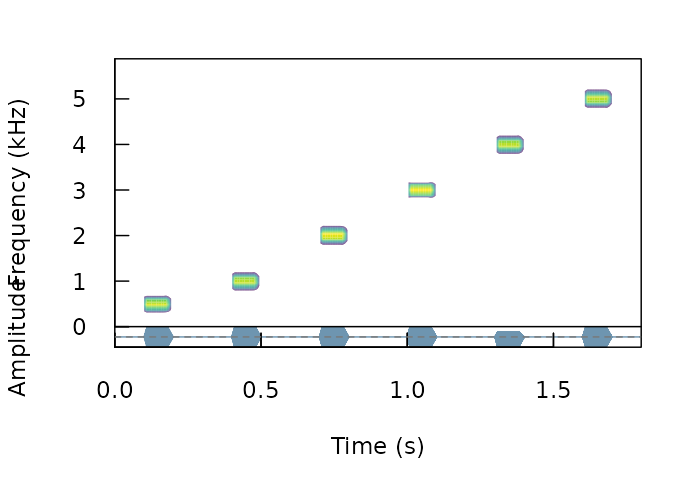
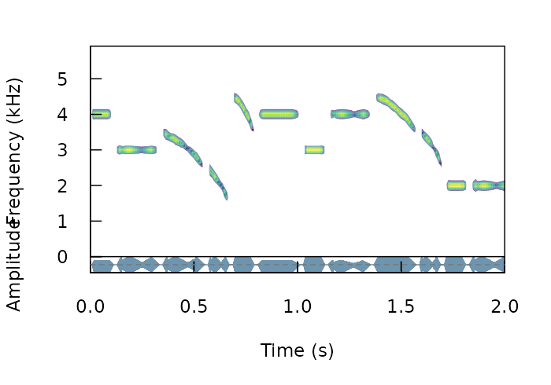
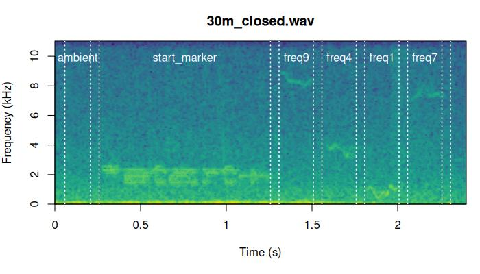

Synthesize and align test sounds
Marcelo Araya-Salas, PhD
2025-01-23
Source:vignettes/align_test_sounds.Rmd
align_test_sounds.Rmd
This vignette deals with two things: how to create synthetic sounds for playback experiments and how to align re-recorded sounds to their reference once playback has been conducted. Here is some terms that will be used in this vignettes and throughout the package.
Glossary

-Model sound: sound in which transmission properties will be studied, usually found in the original field recordings or synthetic sound files.
-Reference sound: sound to use as a pattern to compare against. Usually created by re-recording a model sound broadcast at 1 m from the source (speaker).
-Sound ID: ID of sounds used to identify counterparts across distances. Each sound must have a unique ID within a distance.
-Ambient noise: energy from background sounds in the recording, excluding sounds of interest.
-Test sound: sounds re-recorded far from the source to test for transmission/degradation (also refer to as ‘re-recorded’ sounds).
-Degradation: loose term used to describe any changes in the structure of a sound when transmitted in a habitat.
Note the use of the syntax package_name::function() in
the code throughout the vignette to explicitly identify the packages
each function belongs to.
Synthesize sounds
We often want to figure out how transmission properties vary across a range of frequencies. For instance, Tobias et al (2010) studied whether acoustic adaptation (a special case of sensory drive; Morton 1975), could explain song evolution in Amazonian avian communities. To test this the authors created synthetic pure tone sounds that were used as playback and re-recorded in different habitats. This is the actual procedure of creating synthetic sounds as they described it:
“Tones were synthesized at six different frequencies (0.5, 1.0, 2.0, 3.0, 4.0, and 5.0 kHz) to encompass the range of maximum avian auditory sensitivity (Dooling 1982). At each frequency, we generated two sequences of two 100-msec tones. One sequence had a relatively short interval of 150 msec, close to the mean internote interval in our sample (152± 4 msec). The other sequence had a longer interval of 250 msec, close to the mean maximum internote interval in our sample (283± 74 msec). The first sequence reflects a fast-paced song and the second a slower paced song (sensu Slabbekoorn et al. 2007). The master file (44100 Hz/16 bit WAV) thereby consisted of a series of 12 pairs of artificial 100-ms constant-frequency tones at six different frequencies (0.5, 1.0, 2.0, 3.0, 4.0, and 5.0 kHz).”
We can synthesize the same pure tones using the function
synth_sounds(). The function requires 1) the frequencies of
tones to synthesize (argument frequencies, in kHz) and 2)
the duration of the tones (durations, in seconds). In
addition, logical arguments fm and am allow to
create frequency and amplitude modulated sounds respectively. In our
case we need six tones of 100 ms at 0.5, 1, 2, 3, 4, and 5 kHz separated
by intervals of 150 ms (at least for the first synthetic file described
in Tobias et al 2010). We can also get a selection table (sensu warbleR) with the
information about the time and frequency location of every sound. This
would be required in order to make the master sound file. To get the
selection table we need to set the argument
selec.table = TRUE. This can be done as follows:
Loading required package: viridisLiteLoading required package: warbleRLoading required package: tuneRLoading required package: seewaveLoading required package: NatureSoundsLoading required package: ohun
Please cite 'ohun' as: Araya-Salas, M., Smith-Vidaurre, G., Chaverri, G., Brenes, J. C., Chirino, F., Elizondo-Calvo, J., & Rico-Guevara, A. 2023. ohun: an R package for diagnosing and optimizing automatic sound event detection. Methods in Ecology and Evolution. https://doi.org/10.1111/2041-210X.14170
Please cite 'baRulho' as: Araya-Salas M., E. Grabarczyk, M. Quiroz-Oliva, A. Garcia-Rodriguez, A. Rico-Guevara. (2023), baRulho: an R package to quantify degradation in animal acoustic signals .bioRxiv 2023.11.22.568305.
Attaching package: 'baRulho'The following object is masked from 'package:seewave':
attenuation
library(Rraven)
# synthesize
synth_est <- baRulho::synth_sounds(
mar = 0.1,
frequencies = c(0.5, 1:5),
durations = 0.1,
fm = FALSE,
am = FALSE,
sampling.rate = 12
)
[30msynthesizing sounds (step 0 of 0):
[39m
# convert into a single wave object
synth_wav <- Rraven::exp_est(X = synth_est,
single.file = TRUE,
wave.object = TRUE)
# plot spectro
seewave::spectro(
wave = synth_wav,
scale = FALSE,
palette = viridis,
grid = FALSE,
collevels = seq(-20, 0, 1),
osc = TRUE,
colwave = "#31688EB3",
heights = c(2, 1),
wl = 100
)
The function can add complexity to additional acoustic dimensions. For instance the following code generates all possible combinations of frequencies (2, 3 and 4 kHz), durations (0.1, and 0.2 s), frequency modulation (tonal and modulated) and amplitude modulation (flat and modulated envelope):
# synthesize
synth_est2 <- baRulho::synth_sounds(
mar = 0.01,
sig2 = 0.05,
frequencies = 2:4,
durations = c(0.1, 0.2),
fm = TRUE,
am = TRUE,
shuffle = TRUE,
seed = 123,
sampling.rate = 12
)
# convert into a single wave object
synth_wav2 <- Rraven::exp_est(
X = synth_est2,
single.file = TRUE,
path = tempdir(),
wave.object = TRUE
)
# plot spectro
seewave::spectro(
synth_wav2,
tlim = c(0, 2),
scale = FALSE,
palette = viridis,
grid = FALSE,
collevels = seq(-20, 0, 1),
osc = TRUE,
colwave = "#31688EB3",
heights = c(2, 1),
wl = 140
)
Note that the output is an extended selection table that contains the time-frequency annotations for all synthetic sounds:
# check first 6 rows
head(as.data.frame(synth_est2))| sound.files | selec | start | end | bottom.freq | top.freq | frequency | duration | frequency.modulation | amplitude.modulation | treatment | replicate | sound.id |
|---|---|---|---|---|---|---|---|---|---|---|---|---|
| synthetic_sound_1 | 1 | 0.01 | 0.11 | 3.80 | 4.2 | 4 | 0.1 | tonal | flat | dur:0.1;freq:4;tonal;flat | 1 | dur:0.1;freq:4;tonal;flat_1 |
| synthetic_sound_2 | 1 | 0.01 | 0.21 | 2.80 | 3.2 | 3 | 0.2 | tonal | am | dur:0.2;freq:3;tonal;am | 1 | dur:0.2;freq:3;tonal;am_1 |
| synthetic_sound_3 | 1 | 0.01 | 0.21 | 1.00 | 5.0 | 3 | 0.2 | fm | am | dur:0.2;freq:3;fm;am | 1 | dur:0.2;freq:3;fm;am_1 |
| synthetic_sound_4 | 1 | 0.01 | 0.11 | 0.01 | 4.0 | 2 | 0.1 | fm | am | dur:0.1;freq:2;fm;am | 1 | dur:0.1;freq:2;fm;am_1 |
| synthetic_sound_5 | 1 | 0.01 | 0.11 | 2.00 | 6.0 | 4 | 0.1 | fm | flat | dur:0.1;freq:4;fm;flat | 1 | dur:0.1;freq:4;fm;flat_1 |
| synthetic_sound_6 | 1 | 0.01 | 0.21 | 3.80 | 4.2 | 4 | 0.2 | tonal | flat | dur:0.2;freq:4;tonal;flat | 1 | dur:0.2;freq:4;tonal;flat_1 |
As this is an extended selection table, the ‘sound.files’ column refers to Wave objects included as attributes instead of files in a directory:
# check name of wave objects
names(attributes(synth_est2)$wave.objects) [1] "synthetic_sound_1" "synthetic_sound_2" "synthetic_sound_3" "synthetic_sound_4"
[5] "synthetic_sound_5" "synthetic_sound_6" "synthetic_sound_7" "synthetic_sound_8"
[9] "synthetic_sound_9" "synthetic_sound_10" "synthetic_sound_11" "synthetic_sound_12"
[13] "synthetic_sound_13" "synthetic_sound_14" "synthetic_sound_15" "synthetic_sound_16"
[17] "synthetic_sound_17" "synthetic_sound_18" "synthetic_sound_19" "synthetic_sound_20"
[21] "synthetic_sound_21" "synthetic_sound_22" "synthetic_sound_23" "synthetic_sound_24"
Create master sound file for playback
The function master_sound_file() creates a master sound
file (as you probably guessed) for playback experiments. The function
takes wave objects from an data frame or (extended) selection table
containing the model sounds and concatenates them in a single sound file
(with some silence in between sounds which length can be modified).
master_sound_file() adds acoustic markers at the start and
end of the playback that can be used to time-sync re-recorded sounds,
which streamlines quantification of acoustic degradation. The following
example shows how to create a master sound file using the synthetic
sounds generated above. For the synthetic sounds we need to add a little
space between the top and bottom frequency because
sim_songs() make those values exactly the same for pure
tones:
# create master sound file
synth_master_annotations <- baRulho::master_sound_file(
X = synth_est,
file.name = "synthetic_master",
dest.path = tempdir(),
gap.duration = 0.15
)
[30mThe file synthetic_master.wav has been saved in the directory path '/tmp/RtmpvlNO0t'
[39m
The function saves the master sound file as a wave file and returns a
selection table in the R environment with the time and frequency
‘coordinates’ of the sounds in that file (be careful when playing the
master sound file as it can be shocking for some audiences!). We can
look at the spectrogram of the output file using the seewave function
spectro() as follows:
# read wave file
wave <-
tuneR::readWave(file.path(tempdir(), "synthetic_master.wav"))
# plot spectrogram
seewave::spectro(
wave,
scale = FALSE,
palette = viridis,
wl = 150,
grid = FALSE,
flim = c(0, 4.7)
)
The function can also create a master sound file from sounds found in sound files and from several sounds files, as is likely the case with recordings collected in the field. The following example shows how to create a master sound file using several sound files. The code uses the example data and recordings from the package warbleR:
# load example data from warbleR
data(list = c(
"Phae.long1",
"Phae.long2",
"Phae.long3",
"Phae.long4",
"lbh_selec_table"
))
# save sound files to temporary folder
writeWave(Phae.long1, file.path(tempdir(), "Phae.long1.wav"))
writeWave(Phae.long2, file.path(tempdir(), "Phae.long2.wav"))
writeWave(Phae.long3, file.path(tempdir(), "Phae.long3.wav"))
writeWave(Phae.long4, file.path(tempdir(), "Phae.long4.wav"))
# make an extended selection table
est <- warbleR::selection_table(
X = lbh_selec_table,
extended = TRUE,
path = tempdir(),
pb = FALSE
)
[30mall selections are OK
[39m
# add sound_id column
est$sound.id <- paste0(abbreviate(est$sound.files), est$selec)
# create master sound file
master_annotations <- baRulho::master_sound_file(
X = est,
file.name = "example_master",
dest.path = tempdir(),
gap.duration = 0.3
)
[30mThe file example_master.wav has been saved in the directory path '/tmp/RtmpvlNO0t'
[39m
Again, we can look at the spectrogram of the output file:
# read wave file
wave <-
tuneR::readWave(file.path(tempdir(), "example_master.wav"))
# plot spectrogram
seewave::spectro(
wave,
scale = FALSE,
palette = viridis,
collevels = seq(-120, 0, 5),
wl = 500,
grid = FALSE,
flim = c(0, 10)
)
Note that the output could also be exported to Raven
sound analysis software (Cornell Lab of
Ornithology) for visualization or further manipulation using the
function exp_raven() from the Rraven package.
exp_raven() exports selections in the R environment to a
‘.txt’ file that can be read in Raven:
Rraven::exp_raven(master_annotations, path = tempdir(),
file.name = "example_master_selection_table")
Both sound files and annotations can be visualized in Raven ( acoustic analysis software):
knitr::include_graphics("example_master_table.jpg")
Take a look at the Rraven vignette for more details on how to export and import data from R to Raven.
Note that the start and end markers are placed at relatively low
frequencies so they are less affected by degradation. The frequency
range of markers can be set with argument flim. The
relative amplitude of markers can also be adjusted with the
amp.marker argument. Amplitude of markers will be
multiplied by the value supplied so markers will be louder than sounds.
These two features should increases the chances of detecting the markers
at further distances.
Align re-recorded sounds
Once we went to the field (or lab) and re-recorded the master sound files at different distances, we are ready to start with data analysis. The first step for getting the data ready for analysis involves finding sounds within the re-recorded sound files. We only need to align the start marker between the master playback and the re-recorded sound files, based on the fact that the time difference between the marker and the sounds should be the same in both cases:

We will use acoustic data included in the package as example data. This is a data subset from a sound transmission experiment. The complete data set of the experiment is hosted in this repository. There are two example objects that will be used:
These are the files contained in the data set:
unique(master_est$sound.files)[1] "master.wav"
unique(test_sounds_est$sound.files)[1] "10m_closed.wav" "10m_open.wav" "1m_open.wav" "30m_closed.wav" "30m_open.wav"
Their names are self-explanatory: a master sound file (“master.wav”) and its annotations, a reference sound file (“reference_1m.wav”) and two test files (“test_10m.wav” and “test_20m.wav”) re-recorded at 10 and 20 m respectively.
Now we will save those files in a temporary working directory (those objects are extended selection tables in the R environment) to resemble the usual case in which the acoustic data is found in sound files.
# first remove any other wave file in the temporary working directory (dont do it with your data!)
unlink(list.files(
path = tempdir(),
full.names = TRUE,
pattern = ".wav"
))
# save master sound file
writeWave(object = attr(master_est, "wave.objects")[[1]],
file.path(tempdir(), "master.wav"))
# save test sound files
for (i in unique(test_sounds_est$sound.files)) {
writeWave(object = attr(test_sounds_est, "wave.objects")[[i]], file.path(tempdir(), i))
}
# make annotations a data frame
master_annotations <- as.data.frame(master_est)
The annotations needed for aligning test sound must share the following structure:
master_annotations| sound.files | selec | start | end | bottom.freq | top.freq | sound.id | transect | distance |
|---|---|---|---|---|---|---|---|---|
| master.wav | 1 | 0.050000 | 0.200000 | 1.333333 | 2.666667 | ambient | master | 0 |
| master.wav | 2 | 0.250000 | 1.250000 | 1.333333 | 2.666667 | start_marker | master | 0 |
| master.wav | 3 | 1.300000 | 1.500023 | 7.875000 | 8.805000 | freq:9 | master | 0 |
| master.wav | 4 | 1.550023 | 1.750045 | 3.208000 | 4.069000 | freq:4 | master | 0 |
| master.wav | 5 | 1.800045 | 2.000068 | 0.422000 | 1.223000 | freq:1 | master | 0 |
| master.wav | 6 | 2.050068 | 2.250091 | 6.905000 | 7.917000 | freq:7 | master | 0 |
Note the ‘sound.id’ column which contains a unique identifier for each sound. This will be used to label their counterparts in the test sound files. Users can import annotations from Raven using the Rraven package (see this vignette).
To find the location of the start marker on the test sound files we
use the functions find_markers() to run a cross-correlation
of one or more markers across the test files in order to determine the
exact time in which each marker is found:
markers_position <-
baRulho::find_markers(X = master_annotations, path = tempdir())
markers_position| sound.files | selec | start | end | scores | marker | time.mismatch |
|---|---|---|---|---|---|---|
| 10m_closed.wav | 1 | 0.2575707 | 1.257571 | 0.6363941 | start_marker | 0.010475 |
| 10m_closed.wav | 2 | 2.3181364 | 3.318136 | 0.4522408 | end_marker | NA |
| 10m_open.wav | 3 | 0.2575707 | 1.257571 | 0.7394769 | start_marker | -2.213999 |
| 10m_open.wav | 4 | 0.0936621 | 1.093662 | 0.2479998 | end_marker | NA |
| 1m_open.wav | 5 | 0.2575707 | 1.257571 | 0.8043774 | start_marker | 0.010475 |
| 1m_open.wav | 6 | 2.3181364 | 3.318136 | 0.8409873 | end_marker | NA |
The position of the markers is determined as the highest spectrogram
cross-correlation value for each marker using the functions
find_markers(). If two or more markers are used the
function computes an additional column, ‘time.mismatch’, that compares
the time difference between the two markers in the test files against
that in the master sound file. In a perfect detection the value must be
0. So this number can be used as a measure of error. In some cases
precision can improve by increasing the time resolution of the
spectrogram, that is, by lowering the size of the time window. This is
done with the argument ‘hop.size’. By default it is 11.6 ms (which is
equivalent to a 512 samples window length in a 44.1 kHz file). Let’s try
4 ms:
# lower window length
markers_position <-
baRulho::find_markers(X = master_annotations,
hop.size = 4,
path = tempdir())
markers_position| sound.files | selec | start | end | scores | marker | time.mismatch |
|---|---|---|---|---|---|---|
| 10m_closed.wav | 1 | 0.2520095 | 1.252009 | 0.6135088 | start_marker | 0.0019868 |
| 10m_closed.wav | 2 | 2.3040871 | 3.304087 | 0.4125830 | end_marker | NA |
| 10m_open.wav | 3 | 0.2520095 | 1.252009 | 0.8155176 | start_marker | -2.0940924 |
| 10m_open.wav | 4 | 0.2080079 | 1.208008 | 0.2664834 | end_marker | NA |
| 1m_open.wav | 5 | 0.2520095 | 1.252009 | 0.9124979 | start_marker | -0.0020133 |
| 1m_open.wav | 6 | 2.3000869 | 3.300087 | 0.6832009 | end_marker | NA |
With the time location of acoustic markers we can infer the position
of all other sounds in the new recordings. A selection table from
re-recorded files can be generated using the function
align_test_files():
aligned_tests <-
baRulho::align_test_files(
X = master_annotations,
Y = markers_position,
by.song = TRUE,
remove.markers = FALSE,
path = tempdir()
)
The function returns an object of the same class of the input object
‘X’. In this case ‘X’ is an data.frame:
is.data.frame(aligned_tests)[1] TRUE
aligned_tests| sound.files | selec | start | end | bottom.freq | top.freq | sound.id | marker |
|---|---|---|---|---|---|---|---|
| 10m_closed.wav | 1 | 0.0520095 | 0.2020095 | 1.333333 | 2.666667 | ambient | start_marker |
| 10m_closed.wav | 2 | 0.2520095 | 1.2520095 | 1.333333 | 2.666667 | start_marker | start_marker |
| 10m_closed.wav | 3 | 1.3020095 | 1.5020322 | 7.875000 | 8.805000 | freq:9 | start_marker |
| 10m_closed.wav | 4 | 1.5520322 | 1.7520549 | 3.208000 | 4.069000 | freq:4 | start_marker |
| 10m_closed.wav | 5 | 1.8020549 | 2.0020776 | 0.422000 | 1.223000 | freq:1 | start_marker |
| 10m_closed.wav | 6 | 2.0520776 | 2.2521002 | 6.905000 | 7.917000 | freq:7 | start_marker |
We can check the precision of the alignment by looking at the
spectrograms. The function plot_aligned_sounds() can create
spectrograms to visually inspect alignment precision on test sound
files. The spectrograms are saved as individual JPEG image files (in
‘dest.path’ if supplied). One file is created for each sound file:
aligned_imgs <- baRulho::plot_aligned_sounds(
X = aligned_tests,
path = tempdir(),
dest.path = tempdir(),
duration = 2.4,
ovlp = 0
)
[30mThe image files have been saved in the directory path '/tmp/RtmpvlNO0t'
[39m
aligned_imgs[1] "/tmp/RtmpvlNO0t/plot_align_10m_closed.jpeg" "/tmp/RtmpvlNO0t/plot_align_10m_open.jpeg"
[3] "/tmp/RtmpvlNO0t/plot_align_1m_open.jpeg" "/tmp/RtmpvlNO0t/plot_align_30m_closed.jpeg"
[5] "/tmp/RtmpvlNO0t/plot_align_30m_open.jpeg" These are two of the files generated by the code above:

Manually fixing alignment
In some cases alignments might not be accurate, particularly when
markers have been considerably degraded on the test sound files. The
function manual_realign() allows users to interactively
adjust the alignment of test sound files produced by
align_test_files(). The function generates a multipanel
graph with the spectrogram of the master sound file in top of that from
test sound files, highlighting the position of correspondent test sounds
on both in order to simplify assessing and adjusting their
alignment:
baRulho::manual_realign(
X = aligned_tests,
Y = master_annotations,
duration = 2.4,
path = tempdir()
)
Spectrograms include the first few seconds of the sound files (controlled by ‘duration’) which is usually enough to tell the precision of the alignment. The lower spectrogram shows a series of ‘buttons’ that users can click on to control if the test sound file spectrogram (low panel) needs to be moved to the left (“<”) or right (“>”). Users can also reset the spectrogram to its original position (‘reset’), move on to the next sound file in ‘X’ (test sound file annotations) or stop the process (stop button). The function returns an object similar to the input object ‘X’ in which the start and end of the sounds have been adjusted. By default it uses the start marker as reference but this can be modified with the argument ‘marker’.
Further aligning
When alignments are done manually (or when broadcasting devices add some short delays as the case of some bluetooth transmitters) there could be some small misalignment between the inferred versus the actual start time of re-recorded sounds. This is problematic for quantifying degradation in baRulho (and other sound analysis software) as precise alignment of sound is crucial for the accuracy of downstream measures of sound degradation.
Misalignment can be fixed with the function
auto_realign(). This function uses spectrogram
cross-correlation to sync the position in time of sounds with regard to
a reference sound. manual_realign() takes the sound
recorded at the closest distance to the source as the reference sound.
The function calls warbleR’s
cross_correlation() (just as we did above) internally to
align sounds using cross-correlation. We can simulate a aligned data set
in which test sound are slightly off their position:
data("test_sounds_est")
data("master_est")
# create "unaligned_test_sounds_est" by
# adding error to "test_sounds_est" start and end
unaligned_test_sounds_est <- test_sounds_est
set.seed(123)
noise_time <- sample(c(0.009, -0.01, 0.03, -0.03, 0, 0.07, -0.007),
nrow(unaligned_test_sounds_est),
replace = TRUE)
attr(unaligned_test_sounds_est, "check.res")$start <-
unaligned_test_sounds_est$start <-
unaligned_test_sounds_est$start + noise_time
attr(unaligned_test_sounds_est, "check.res")$end <-
unaligned_test_sounds_est$end <-
unaligned_test_sounds_est$end + noise_timeNow we can re-aligned test sounds:
#re align
rts <- auto_realign(X = unaligned_test_sounds_est, Y = master_est)This is how the sounds look before and after being aligned:

In case this doesn’t work as expected there is another option. The
function seltailor() from warbleR allows
user to manually adjust the start and end of sounds in a extended
selection table. Alternatively, users can manually determined the
position of the the markers using Raven
and then import the annotations into ‘R’ using the function
‘imp_raven()’ from the Rraven package.
Please report any bugs here.
The package baRulho should be cited as follows:
Araya-Salas, M. (2020), baRulho: quantifying degradation of (animal) acoustic signals in R. R package version 1.0.0.
References
Araya-Salas, M. (2017). Rraven: connecting R and Raven bioacoustic software. R package version 1.0.0.
Araya-Salas, M. (2020), baRulho: quantifying degradation of (animal) acoustic signals in R. R package version 1.0.0
Araya-Salas M, Smith-Vidaurre G. (2017) warbleR: An R package to streamline analysis of animal acoustic signals. Methods Ecol Evol 8:184–191.
Dabelsteen, T., Larsen, O. N., & Pedersen, S. B. (1993). Habitat-induced degradation of sound signals: Quantifying the effects of communication sounds and bird location on blur ratio, excess attenuation, and signal-to-noise ratio in blackbird song. The Journal of the Acoustical Society of America, 93(4), 2206.
Marten, K., & Marler, P. (1977). Sound transmission and its significance for animal vocalization. Behavioral Ecology and Sociobiology, 2(3), 271-290.
Morton, E. S. (1975). Ecological sources of selection on avian sounds. The American Naturalist, 109(965), 17-34.
Tobias, J. A., Aben, J., Brumfield, R. T., Derryberry, E. P., Halfwerk, W., Slabbekoorn, H., & Seddon, N. (2010). Song divergence by sensory drive in Amazonian birds. Evolution, 64(10), 2820-2839.
Session information
R version 4.4.2 (2024-10-31)
Platform: x86_64-pc-linux-gnu
Running under: Ubuntu 24.04.1 LTS
Matrix products: default
BLAS: /usr/lib/x86_64-linux-gnu/openblas-pthread/libblas.so.3
LAPACK: /usr/lib/x86_64-linux-gnu/openblas-pthread/libopenblasp-r0.3.26.so; LAPACK version 3.12.0
locale:
[1] LC_CTYPE=C.UTF-8 LC_NUMERIC=C LC_TIME=C.UTF-8 LC_COLLATE=C.UTF-8
[5] LC_MONETARY=C.UTF-8 LC_MESSAGES=C.UTF-8 LC_PAPER=C.UTF-8 LC_NAME=C
[9] LC_ADDRESS=C LC_TELEPHONE=C LC_MEASUREMENT=C.UTF-8 LC_IDENTIFICATION=C
time zone: UTC
tzcode source: system (glibc)
attached base packages:
[1] stats graphics grDevices utils datasets methods base
other attached packages:
[1] Rraven_1.0.14 baRulho_2.1.3 ohun_1.0.2 warbleR_1.1.34 NatureSounds_1.0.5
[6] seewave_2.2.3 tuneR_1.4.7 viridis_0.6.5 viridisLite_0.4.2 knitr_1.49
loaded via a namespace (and not attached):
[1] gtable_0.3.6 rjson_0.2.23 xfun_0.50 bslib_0.8.0 ggplot2_3.5.1
[6] vctrs_0.6.5 tools_4.4.2 bitops_1.0-9 curl_6.1.0 parallel_4.4.2
[11] tibble_3.2.1 proxy_0.4-27 pkgconfig_2.0.3 KernSmooth_2.23-24 checkmate_2.3.2
[16] desc_1.4.3 lifecycle_1.0.4 stringr_1.5.1 compiler_4.4.2 textshaping_1.0.0
[21] brio_1.1.5 munsell_0.5.1 htmltools_0.5.8.1 class_7.3-22 sass_0.4.9
[26] RCurl_1.98-1.16 yaml_2.3.10 pillar_1.10.1 pkgdown_2.1.1 jquerylib_0.1.4
[31] MASS_7.3-61 classInt_0.4-11 cachem_1.1.0 Deriv_4.1.6 digest_0.6.37
[36] stringi_1.8.4 sf_1.0-19 fastmap_1.2.0 grid_4.4.2 colorspace_2.1-1
[41] cli_3.6.3 magrittr_2.0.3 e1071_1.7-16 scales_1.3.0 backports_1.5.0
[46] rmarkdown_2.29 httr_1.4.7 Sim.DiffProc_4.9 signal_1.8-1 igraph_2.1.3
[51] gridExtra_2.3 png_0.1-8 ragg_1.3.3 kableExtra_1.4.0 pbapply_1.7-2
[56] evaluate_1.0.3 dtw_1.23-1 fftw_1.0-9 testthat_3.2.3 rlang_1.1.5
[61] Rcpp_1.0.14 glue_1.8.0 DBI_1.2.3 xml2_1.3.6 svglite_2.1.3
[66] rstudioapi_0.17.1 jsonlite_1.8.9 R6_2.5.1 systemfonts_1.2.1 fs_1.6.5
[71] units_0.8-5